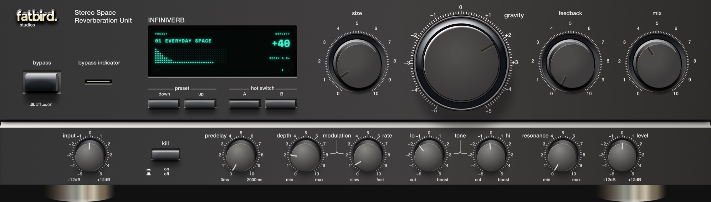
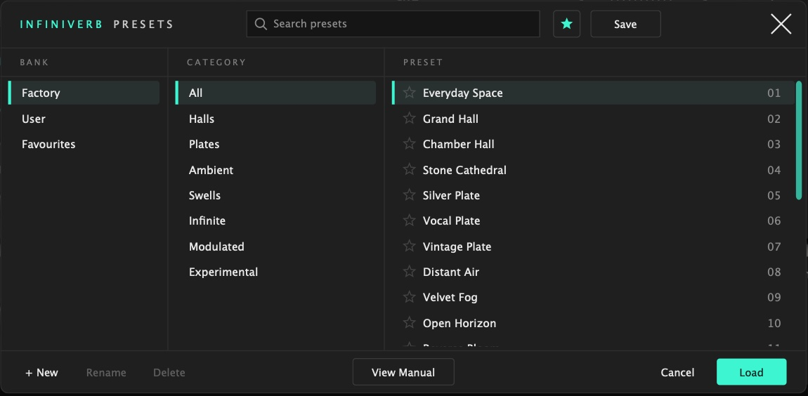

Stereo Space Reverberation Unit
User Manual · Version {{VERSION}}

The INFINIVERB panel.
INFINIVERB is an algorithmic stereo reverb. It takes a mono or stereo input and produces a stereo output. The input is summed to mono before the reverb; the dry signal keeps its stereo image.
Signal path: INPUT → PREDELAY → reverb (GRAVITY, SIZE, modulation, LO and HI) → RESONANCE → MIX → LEVEL. FEEDBACK returns the reverb output to the point before PREDELAY.
| macOS | macOS 11 or later on Apple Silicon; macOS 10.13 or later on Intel. |
| Windows | Windows 10 or later, 64-bit. |
| Control | Range · default | Function |
|---|---|---|
| GRAVITY | −100 to +100 (scale −5 to +5) · 0 | Sets the decay time and the shape of the reverb envelope. At 0 the decay time is 1.4 s. From 0 to +100 the decay time increases to 60 s. From 0 to −100 the reverb starts as a swell: it rises over a period that increases from 0.03 s to 1.45 s, then decays over a time that increases from 1.4 s to 4.7 s. The rise period also changes with SIZE. |
| SIZE | 0 to 100 % (scale 0 to 10) · 30 % | Sets the size of the space: the reverb's delay lengths, from about 42 ms to about 1 s. The decay time set by GRAVITY does not change with SIZE. Moving SIZE while audio plays shifts the pitch of the tail during the movement. |
| FEEDBACK | 0 to 100 % (scale 0 to 10) · 0 % | Returns the reverb output to its input, before PREDELAY. Each repeat is delayed by PREDELAY again and is darker than the one before. At high settings the reverb sustains; its level is limited and does not keep rising. |
| MIX | 0 to 100 % (scale 0 to 10) · 50 % | Balance between the dry signal and the reverb, as an equal-power crossfade. 0 % is dry only; 100 % is reverb only. |
| INPUT | −12 to +12 dB · 0 dB | Input level. Applies to the whole input, including the dry signal. |
| PREDELAY | 0 to 2000 ms · 0 ms | Delay before the reverb. It is inside the FEEDBACK loop, so with FEEDBACK above 0 every repeat is delayed again. Changes crossfade over 30 ms. |
| DEPTH | 0 to 100 % (min to max) · 40 % | Amount of delay-time modulation inside the reverb. |
| RATE | 0 to 100 % (slow to fast) · 20 % | Speed of the modulation, from 0.1 Hz to 5 Hz. |
| LO | cut −5 to boost +5, flat at the centre · centre | Amount of low frequencies (below about 500 Hz) in the reverb tail. The filter is inside the reverb's decay path. Below the centre, the low frequencies are lower and decay faster. Above the centre, they are higher and decay more slowly, up to three times the decay time. The display shows the filter gain, from −24 dB to +6 dB. |
| HI | cut −5 to boost +5, flat at the centre · centre | As LO, for the high frequencies (above about 4.2 kHz). |
| RESONANCE | 0 to 100 % (min to max) · 0 % | Adds a resonant peak at the LO and HI corner frequencies, at the reverb output. It has no effect while LO and HI are at the centre. The further LO or HI is from the centre, the higher its peak, up to +12 dB. |
| LEVEL | −12 to +12 dB · 0 dB | Output level of the dry signal and the reverb together. |
| KILL | on / off · off | Stops the input from entering the reverb, with an 8 ms fade. The dry signal and the reverb already sounding continue. With FEEDBACK above 0 the reverb keeps circulating. |
| BYPASS | on / off · off | Passes the input through unprocessed, with a 10 ms crossfade. The reverb is cleared while bypassed. The bypass indicator lights and the display dims. The host's bypass uses the same control. |
| PRESET DOWN / UP | Loads the previous or next preset in the list (factory presets, then user presets). The list wraps at both ends. | |
| HOT SWITCH A / B | A / B · A | Two complete settings. Switching stores the current settings in the slot being left and recalls the other. A slot that has not been used yet starts as a copy of the current settings. KILL and BYPASS are not part of a setting. Both slots are saved with the host session. |
Open the browser by clicking the display. Close it with Cancel, the × button, Esc, or a click outside it.

The preset browser.
| Bank | Factory, User or Favourites. |
| Category | All, Halls, Plates, Ambient, Swells, Infinite, Modulated, Experimental. |
| Preset | The presets in the selected bank and category, with their numbers. Click the star beside a preset to add it to or remove it from Favourites. |
| Search | Shows only the presets whose names contain the text. |
| ★ button | Shows only favourite presets. |
| Save | Saves the current settings over the selected user preset. With a factory preset selected, it asks for a name and saves a new user preset. |
| + New | Saves the current settings as a new user preset; asks for a name and a category. |
| Rename, Delete | Rename or delete the selected user preset. Factory presets cannot be renamed or deleted. |
| View Manual | Opens this manual. |
| Load | Loads the selected preset. Double-clicking a preset or pressing Return (Enter) does the same. |
A preset stores every knob setting. It does not store KILL, BYPASS or the HOT SWITCH slot.
| Channels | Mono in, stereo out; stereo in, stereo out. |
| Sample rates | 44.1 to 192 kHz. At 88.2 kHz and above, the reverb runs internally at 44.1 or 48 kHz, so it sounds the same at every sample rate. The dry signal stays at the session's rate. |
| Latency | None. |
| Automation | Every control can be automated. HOT SWITCH changes the controls that differ between A and B as if they had been turned by hand; if those controls are automated, the host suspends their automation until it is re-enabled. |
| Reverb tail | INFINIVERB tells the host how long the reverb continues after the input stops, from the current settings. With FEEDBACK above 0 it reports an endless tail. |
| Output limit | The reverb signal is limited to 0 dBFS at the output. Below −0.9 dBFS the limiter has no effect. The dry signal is not limited. |
INFINIVERB is free software, licensed under the GNU Affero General Public License, version 3. The complete source code for each release is provided with it. The names INFINIVERB and fatbird Studios and the fatbird Studios logo are not covered by that licence.
Parts of the interface artwork are adapted from a Figma Community design file by Coke Stuyck (figma.com/community/file/1408098656188006777), licensed under CC BY 4.0. fatbird Studios rearranged, resized and relabelled them and added new elements.
INFINIVERB includes third-party software. Their licences and notices are in THIRD-PARTY-NOTICES.txt, provided with the installer and with the source code.